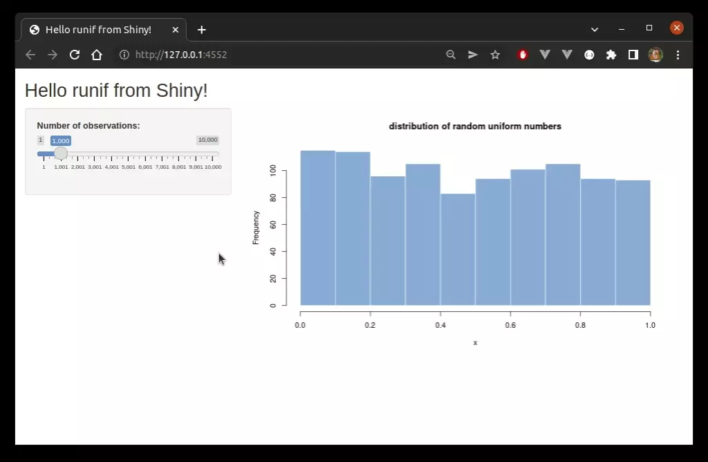

Overview
From the Shiny website:
Shiny is an R package that makes it easy to build interactive web apps straight from R. You can host standalone apps on a webpage or embed them in R Markdown documents or build dashboards. You can also extend your Shiny apps with CSS themes, htmlwidgets, and JavaScript actions.
Shiny is a wonderful tool, providing a low-entry option for R programmers to develop single-page web applications. But, in my opinion, it is over-used, and often pushed a fair bit beyond its ideal use-case. In this post, we consider where Shiny might be a good option, and where it might not. And even when Shiny is a good option, there are still some common patterns which might be better served by alternative approaches.
(Note that the source code for all the apps and services in this post can be downloaded from cmhh/too-much-shiny.)
Shiny in Practice?
Fundamentally, Shiny applications run on a remote server, with a persistent communication channel being established between the client and the remote server, typically a WebSocket. An obvious alternative is to create an application that runs in the client’s browser, with no such requirement for a persistent connection to any such server. The two approaches each have their own strengths and weaknesses, and there are certainly situations where Shiny is a sensible solution.
Firstly, data might well be too large to be bundled in a client-side application. A common solution is to bundle data with a Shiny application–clients then make selections which are actioned on the remote computer, and only small slices are sent to the client at any one time. This works well enough, but has a few drawbacks, the main one being that applications need to be redeployed whenever the underlying data is updated. An alternative, though, is to create a data service which the application can call. New data can be deployed, then, without interruption to the published application, and in this case it might also become plausible to deploy the application as a client-side application, with no remote dependencies other than the data service itself. Of course, we really are only shifting the problem since we still need to host our data service, and to establish a process for updating the underlying data, and this may or may not be easier in practice than bundling data with a Shiny application.
Another common reason for using Shiny might well be because functionality required by an application already exists in R, and we simply don’t have the time or will to re-implement the logic ourselves elsewhere. The methods being used might also be computationally expensive, and we’d rather the computational burden be lumped with us, rather than users of the application. Just as one possible solution to the data-bundling problem might be to develop a remote data service, there are a number of remote execution options for R in practice. That is, rather than write a Shiny application to make use of some R function, we make that R function available as a remote procedure call which can be used from a client-side application developed in some other way. (Actually, one nice thing about remote procedure calls is that they can be utilised by any client that has basic HTTP capabilities such as GET and POST).
Finally, Shiny might just be used for purely practical or pragmatic reasons. For developers who are already familiar with R, Shiny is comically easy, and functional applications can be created extremely rapidly, often with relatively little coding effort. Moreover, in some organisations, options are limited to some approved, possibly very narrow set. It might well be that there is an existing approved process or pipeline for publishing Shiny applications, and it might simply be easier to leverage the existing process than to gain approval to use something else. The difficulty of the latter shouldn’t be underestimated, and you should count yourself lucky if it isn’t a problem for you! Shiny supports HTML templates, though, and so non-Shiny applications can be published as ‘Shiny’ applications in a pinch (a hack to be sure, and one that your particular I.T. department might not look very fondly on).
We will explore all of these scenarios, among others, with illustrative examples. The general approach will be to take an existing Shiny application, and rewrite it as a client-side application using Vue.js. Where the replacement applications require support in the way of a data service or remote procedure call, we will use Plumber. Plumber is a tool that lets us create server-side APIs simply by annotating existing R functions–we could use any number of alternatives, Node, for example, but using Plumber will have the happy secondary benefit of being easy to understand for R users.
Vue.js
Vue.js is a progressive JavaScript framework used for creating reactive web applications. By this we mean that it is possible to adopt Vue incrementally, using as little, or as much, as needed. To illustrate, here is a complete Vue application, embedded right here in this page:
{{ this.count }}
The code that produced the application can be pasted into any HTML page, and looks as follows:
<div id="counterapp1">
<button @click="count--">-</button>
<p v-bind:style="counterStyle"> {{ this.count }} </p>
<button @click="count++">+</button>
</div>
<script>
const counterApp1 = new Vue({
el: "#counterapp1",
data: {
count: 0,
counterStyle: {display: "inline-block", width: "30px", textAlign: "center"}
}
})
</script>
<script src="https://cdn.jsdelivr.net/npm/vue@2/dist/vue.js"></script>
One particularly powerful feature of Vue is the ability to encapsulate controls and other elements as so-called Vue components. Components can be shipped as a library and re-used. For example, in the simple example above we had a simple counter with increment and decrement buttons. We can make a counter component as follows:
<script>
Vue.component('vue-counter', {
data: function() {
return {
count: 0,
counterStyle: {display: "inline-block", width: "30px", textAlign: "center"}
}
},
template: `
<div><button @click="count--">-</button>
<p v-bind:style="counterStyle"> {{ this.count }} </p>
<button @click="count++">+</button></div>
`
});
</script>
We can then reproduce the example application using the controller instead as follows:
<div id="counterapp1">
<vue-counter></vue-counter>
</div>
<script>
const counterApp1 = new Vue({ el: "#counterapp1" })
</script>
While a little more work overall than the original example, the effort really pays off if we have the need for several controllers–perhaps in different applications. For example the following code:
<div id="counterapp2">
<vue-counter></vue-counter>
<vue-counter></vue-counter>
<vue-counter></vue-counter>
</div>
<script>
const counterApp2 = new Vue({ el: "#counterapp2" })
</script>
produces:
We won’t make much (any) use of components in this post, but it is an important feature to be aware of. In the examples in this post, Shiny applications will usually require less user-written code than the equivalent Vue application. This is because Shiny provides a high-level interface over top of existing JavaScript libraries and CSS frameworks (mostly Bootstrap), and the same thing is, of course, possible with Vue in practice simply by finding the appropriate component libraries online, or rolling your own if later re-use can justify the effort.
Plumber
From the Plumber website:
Plumber allows you to create a web API by merely decorating your existing R source code with roxygen2-like comments.
For example, say we had the following very simple R function:
function(n) runif(n)
We could annotate this function in a script in the following way:
#* Get a sequence of random numbers
#* @param n Size of sequence
#* @get /rand
function(n) runif(n)
Given this script, we can then start this as a service simply by running:
library(plumber)
pr(file = "rand.R") |> pr_run(port = 3000)
We can then GET this in an obvious way:
curl -sX GET "http://127.0.0.1:3000/rand?n=10" -H "accept: */*" | jq
[
0.1999,
0.651,
0.8456,
0.089,
0.3904,
0.4123,
0.5724,
0.9378,
0.7262,
0.9282
]
As noted, there are many options for deploying services, and Plumber is used here mostly for illustrative purposes. That said, where we are interested in functionality that exists within R, perhaps even exclusively so, then Plumber provides an easy way to make that functionality available to users of other languages, and to client-side applications in particular.
A Simple Example with Bundled Data
When we run shiny::runExample("01_hello", display.mode = "normal"), we are met with with the following:

The source code for the entire app is very simple (slightly modified to read the data from an external file, rather than use a dataset that is bundled with R):
library(shiny)
faithful <- readRDS("data/faithful.rds")
ui <- fluidPage(
titlePanel("Hello Shiny!"),
sidebarLayout(
sidebarPanel(
sliderInput(
inputId = "bins",
label = "Number of bins:",
min = 1, max = 50, value = 30
)
),
mainPanel(
plotOutput(outputId = "distPlot")
)
)
)
server <- function(input, output) {
output$distPlot <- renderPlot({
x <- faithful$waiting
bins <- seq(min(x), max(x), length.out = input$bins + 1)
hist(
x, breaks = bins, col = "#75AADB", border = "white",
xlab = "Waiting time to next eruption (in mins)",
main = "Histogram of waiting times")
})
}
shinyApp(ui = ui, server = server)
For contrast, here is the complete source for a similar application created with Vue.js:
<html>
<head>
<title>Hello Vue.js!</title>
<link href="https://cdn.jsdelivr.net/npm/@mdi/font@6.x/css/materialdesignicons.min.css" rel="stylesheet">
<link href="https://cdn.jsdelivr.net/npm/vue-slider-component@latest/theme/default.css" rel="stylesheet">
<link href="./styles.css" rel="stylesheet"/>
</head>
<body>
<div id=faithfulapp>
<div class="title"><h1>Hello Vue.js!</h1></div>
<div class="body">
<div class="slidercontainer">
<vue-slider
v-model="bins" :min="1" :max="50" :tooltip="'always'"
:marks="[1,5,10,15,20,25,30,35,40,45,50]"
></vue-slider>
</div>
<div class="plotcontainer">
<div id="plot"></div>
</div>
</div>
<p>blah</p>
</div>
<script src="https://cdn.jsdelivr.net/npm/vue@2/dist/vue.js"></script>
<script src="https://cdn.jsdelivr.net/npm/vue-slider-component@latest/dist/vue-slider-component.umd.min.js"></script>
<script src='https://cdn.plot.ly/plotly-2.8.3.min.js'></script>
<script src="./faithful.js"></script>
<script src='./main.js'></script>
</body>
</html>
var faithfulapp = new Vue({
el: '#faithfulapp',
data: {
data: faithful,
layout: {
title: "histogram of waiting times",
xaxis: {title: {text: "waiting time to next eruption (in mins)"}},
yaxis: {title: {text: "Frequency"}}},
config: { responsive: true },
bins: 30
},
computed: {
series: function() {
return [{
x: this.data,
type: 'histogram',
nbinsx: this.bins
}];
}
},
watch: {
series: function() {
this.updatePlot()
}
},
mounted: function() {
this.updatePlot()
},
methods: {
updatePlot: function() {
Plotly.newPlot('plot', this.series, this.layout, this.config)
}
},
components: {
'vueSlider': window[ 'vue-slider-component' ],
}
});
window.faithful = (function() {
return [
79,54,74,62,85,55,88,85,51,85,54,84,78,47,83,52,62,84,52,79,51,47,78,69,74,
83,55,76,78,79,73,77,66,80,74,52,48,80,59,90,80,58,84,58,73,83,64,53,82,59,
75,90,54,80,54,83,71,64,77,81,59,84,48,82,60,92,78,78,65,73,82,56,79,71,62,
76,60,78,76,83,75,82,70,65,73,88,76,80,48,86,60,90,50,78,63,72,84,75,51,82,
62,88,49,83,81,47,84,52,86,81,75,59,89,79,59,81,50,85,59,87,53,69,77,56,88,
81,45,82,55,90,45,83,56,89,46,82,51,86,53,79,81,60,82,77,76,59,80,49,96,53,
77,77,65,81,71,70,81,93,53,89,45,86,58,78,66,76,63,88,52,93,49,57,77,68,81,
81,73,50,85,74,55,77,83,83,51,78,84,46,83,55,81,57,76,84,77,81,87,77,51,78,
60,82,91,53,78,46,77,84,49,83,71,80,49,75,64,76,53,94,55,76,50,82,54,75,78,
79,78,78,70,79,70,54,86,50,90,54,54,77,79,64,75,47,86,63,85,82,57,82,67,74,
54,83,73,73,88,80,71,83,56,79,78,84,58,83,43,60,75,81,46,90,46,74
];
})();
@import url('https://fonts.googleapis.com/css2?family=Open+Sans&display=swap');
#faithfulapp * {
font-family: "Open Sans", verdana, arial, sans-serif;
}
#faithfulapp p {
margin: 0;
}
#faithfulapp .body {
display: block;
width: 100%;
}
#faithfulapp .title h1 {
font-size: 30px;
font-weight: 500;
margin-bottom: 10px;
}
#faithfulapp .slidercontainer {
display: inline-block;
width: calc(30% - 32px);
overflow: none;
vertical-align: top;
border: 1px solid #999;
border-radius: 5px;
background-color: #eee;
padding: 35px 15px 25px 15px;
}
#faithfulapp .plotcontainer {
display: inline-block;
width: 70%;
}
Because the Vue application is a pure client-side application, we can embed it directly here, whereas the Shiny app must be hosted on a remote server. The Vue application looks as follows:
Hello Vue.js!
The Shiny application is undeniably simpler from a developer perspective, at least in terms of the volume of code. This is largely because we are using a pre-canned template, with pre-canned user widgets, and default styling which we have not modified. Things escalate quickly if any of these things are not true. For example, if we want a more bespoke layout, custom styling, or non-standard widgets. Running Shiny applications are made up largely of HTML and JavaScript after all.
A Less Simple Example with Bundled Data
In this example we start with a Shiny application that has a relatively large data asset bundled along with the application source–a data frame containing 1,118,488 rows, occupying 125.4MB in-memory, and 3.2MB compressed to disk (or 244.1MB saved as a CSV, and 6.6MB as a gzipped CSV). We will then make the same data available via a remote data service. We then modify the Shiny application so it uses the service, and remove all trace of the bundled data. Finally, we port the Shiny application using Vue.js.
Shiny with Bundled Data
The complete source for our first attempt is relatively simple, and looks as follows:
shinyUI(fluidPage(
titlePanel("Labour Market Time Series Data"),
sidebarLayout(
sidebarPanel(width = 4,
selectizeInput(
"subject", "select subject:", subject_choices
),
selectizeInput(
"group", "select group:", c()
),
selectizeInput(
"series", "select series:", c(), multiple = TRUE
)
),
mainPanel(width = 8,
plotlyOutput("plot")
)
)
))
shinyServer(function(input, output, session) {
groups <- reactive({
req(input$subject)
unique(data[
subject_code == input$subject,
.(group_code, group_description)
])
})
series <- reactive({
req(input$subject, input$group)
unique(data[
subject_code == input$subject & group_code == input$group,
c("series_reference", sprintf("series_title_%d", 1:5)),
with = FALSE
])
})
values <- reactive({
req(input$subject, input$group, input$series)
data[
subject_code == input$subject & group_code == input$group &
series_reference %in% input$series
]
})
observeEvent(groups(), {
group_choices <- setNames(
groups()$group_code,
groups()$group_description
)
updateSelectizeInput(session, "group", choices = group_choices)
})
observeEvent(series(), {
labels <- apply(series(), 1, function(z) {
z[-1] |> (\(x) {x[x != ""]})() |> paste(collapse = ", ")
})
subject_choices <- setNames(
series()$series_reference,
sprintf("%s - %s", series()$series_reference, labels)
)
updateSelectizeInput(session, "series", choices = subject_choices)
})
output$plot <- renderPlotly({
req(values())
if (is.null(values())) return(NULL)
if (nrow(values()) == 0) return(NULL)
p <- ggplot(
data = values(),
aes(x = period, y = data_value, col = series_reference)
) +
geom_line()
ggplotly(p)
})
})
library(shiny)
library(data.table)
library(ggplot2)
library(plotly)
data <- readRDS("../../data/labour_market.rds")
subjects <- unique(data[, .(subject_code, subject_description)])
subject_choices <- setNames(
subjects$subject_code,
sprintf("%s - %s", subjects$subject_code, subjects$subject_description)
)
and the running application looks as follows:

Creating a Supporting Data Service
As described, the first cut of our Shiny application has bundled with it a large data frame, but we are only ever interested in a small subset at any point in time. The subset we are interested in is determined by client selections, and the filtered data is made available via a reactive expression. For example, in our application, users can select a subject, then a group, and then up to $n$ series references, and we then use the selected values to filter the bundled data:
values <- reactive({
req(input$subject, input$group, input$series)
data[
subject_code == input$subject & group_code == input$group &
series_reference %in% input$series
]
})
That is, calling values() in our code will always return the correct subset, and any reactive block of code that depends on it will be re-evaluated whenever the underlying inputs change. Here we plot the result using standard plotting functions, thus separating the logic for deciding what we plot and how we plot. This is a reasonable practice in Shiny–that we access data via reactive expressions where possible–keeping such concerns separate from other logic, and helping keep our applications modular. But if we follow such a practice when authoring Shiny applications, we then have a reasonably obvious path for replacing the bundled data with a service–we simply create a service with end-points that roughly match our reactive expressions. Thus, the only changes we would need to make to our existing application would be to each of the reactive expressions which access the original bundled data. In this case, a sufficient service is fully described as follows:
#* @apiTitle Labour market data service
#* @apiDescription Data service for HLFS, QES, and LCI time series data.
library(data.table)
data <- readRDS("../data/labour_market.rds")
subjects <- unique(data[, c("subject_code", "subject_description")])
#* @filter cors
#* turn this off in production!!
cors <- function(res) {
res$setHeader("Access-Control-Allow-Origin", "*")
plumber::forward()
}
#* Return complete set of subjects
#* @get /subjects
#* @serializer json
function() {
subjects
}
#* Return complete set of groups for selected subject
#* @get /groups/<subjectCode>
#* @serializer json
function(subjectCode) {
unique(data[
subject_code == subjectCode,
c("subject_code", "group_code", "group_description")
])
}
#* Return complete set of series references for selected subject and group
#* @get /series/<subjectCode>/<groupCode>
#* @serializer json
function(subjectCode, groupCode) {
unique(data[
subject_code == subjectCode & group_code == groupCode,
c("subject_code", "group_code", "group_description",
"series_reference", "units", "magnitude",
sprintf("series_title_%d", 1:5)), with = FALSE
])
}
#* Return data for specific references
#* @param seriesReference:[string] Series reference, e.g. "HLFQ.SAA1AZ"
#* @get /values
#* @serializer json
function(seriesReference) {
data[series_reference %in% seriesReference]
}
#* Return data for specific references
#* @param seriesReference:[string] Series reference, e.g. "HLFQ.SAA1AZ"
#* @get /values/<subjectCode>/<groupCode>
#* @serializer json
function(subjectCode, groupCode, seriesReference) {
data[
subject_code == subjectCode & group_code == groupCode &
series_reference %in% seriesReference
]
}
library(plumber)
pr("labour_market_service.R") |> pr_run(host = "0.0.0.0", port = 3001)
As an aside, the performance of this service is actually surprisingly good. This is essentially because we’ve used the data.table package which is extremely fast. As an example, here is the result of fetching a single series using siege
siege -b -c 3 -t 10s "http://localhost:3001/series?seriesReference=HLFQ.SAA1AZ"
** SIEGE 4.0.7
** Preparing 3 concurrent users for battle.
The server is now under siege...
Lifting the server siege...
Transactions: 6216 hits
Availability: 100.00 %
Elapsed time: 9.12 secs
Data transferred: 0.33 MB
Response time: 0.00 secs
Transaction rate: 681.58 trans/sec
Throughput: 0.04 MB/sec
Concurrency: 2.98
Successful transactions: 0
Failed transactions: 0
Longest transaction: 0.06
Shortest transaction: 0.00
(Note that performance slowed if the number of concurrent workers exceeded 3. This is possibly because my machine has just 6 cores / 12 threads, and data.table was using 6 threads by default already. In saying that, CPU utilisation appeared low while the test was running.)
Shiny with a Data Service (and No Bundled Data)
Given an available service, we can easily modify our application, removing all dependencies on the bundled data. Before listing the complete source, however, we lift out a single reactive expression for illustration–series, in this case:
series <- reactive({
req(input$subject, input$group)
unique(data[
subject_code == input$subject & group_code == input$group,
c("series_reference", sprintf("series_title_%d", 1:5)),
with = FALSE
])
})
series <- reactive({
req(input$subject, input$group)
url <- sprintf("%s/series/%s/%s", service, input$subject, input$group)
response <- setDT(jsonlite::fromJSON(url))
if (length(response) == 0) return(NULL)
response[
,c("series_reference", sprintf("series_title_%d", 1:5)),
with = FALSE
]
})
Again, our application is mostly unchanged besides these reactive expressions (we remove the data dependency in global.R, and replace it with the path to our service). The full source is as follows:
shinyUI(fluidPage(
titlePanel("Labour Market Time Series Data"),
sidebarLayout(
sidebarPanel(width = 4,
selectizeInput(
"subject", "select subject:", subject_choices
),
selectizeInput(
"group", "select group:", c()
),
selectizeInput(
"series", "select series:", c(), multiple = TRUE
)
),
mainPanel(width = 8,
plotlyOutput("plot")
)
)
))
shinyServer(function(input, output, session) {
groups <- reactive({
req(input$subject)
url <- sprintf("%s/groups/%s", service, input$subject)
setDT(jsonlite::fromJSON(url))
})
series <- reactive({
req(input$subject, input$group)
url <- sprintf("%s/series/%s/%s", service, input$subject, input$group)
response <- setDT(jsonlite::fromJSON(url))
if (length(response) == 0) return(NULL)
response[
,c("series_reference", sprintf("series_title_%d", 1:5)),
with = FALSE
]
})
values <- reactive({
req(input$subject, input$group, input$series)
url <- sprintf(
"%s/values/%s/%s?%s",
service,
input$subject,
input$group,
paste(sprintf("seriesReference=%s", input$series), collapse = "&")
)
response <- setDT(jsonlite::fromJSON(url))
if (length(response) == 0)
return(NULL)
else
response[, period := as.Date(period, format = "%Y-%m-%d")]
})
observeEvent(groups(), {
group_choices <- setNames(
groups()$group_code,
groups()$group_description
)
updateSelectizeInput(session, "group", choices = group_choices)
})
observeEvent(series(), {
labels <- apply(series(), 1, function(z) {
z[-1] |> (\(x) {x[x != ""]})() |> paste(collapse = ", ")
})
subject_choices <- setNames(
series()$series_reference,
sprintf("%s - %s", series()$series_reference, labels)
)
updateSelectizeInput(session, "series", choices = subject_choices)
})
output$plot <- renderPlotly({
req(values())
if (is.null(values())) return(NULL)
if (nrow(values()) == 0) return(NULL)
p <- ggplot(
data = values(),
aes(x = period, y = data_value, col = series_reference)
) +
geom_line()
ggplotly(p)
})
})
library(shiny)
library(data.table)
library(ggplot2)
library(plotly)
library(config)
service <- config::get("service")
subjects <- jsonlite::fromJSON(sprintf("%s/subjects", service))
subject_choices <- setNames(
subjects$subject_code,
sprintf("%s - %s", subjects$subject_code, subjects$subject_description)
)
default:
service: "http://localhost:3001"
And note our application starts up a little faster now since we do not have to wait for the bundled data to be read into memory. And, as noted in the overview, we have disentangled our application and the data completely, and so we can update our data service without needing to modify our application or redeploy it. Cool.
Vue.js Application with a Data Service
Following the trend, the source code for a client-side Vue application is longer and more verbose than the Shiny code, but not unmanageably so. The complete code is:
<html>
<head>
<title>Labour Market Time Series Data</title>
<link rel="stylesheet" href="https://unpkg.com/vue-select@3.0.0/dist/vue-select.css">
<link rel="stylesheet" href="./styles.css" />
</head>
<body>
<div id=labmktapp>
<div class="title"><h1>Labour Market Time Series Data</h1></div>
<div class="body">
<div class="controls">
<p class="label">select subject:</p>
<v-select v-model="selectedSubject" :options="subjects" id="subject-select"></v-select>
<p class="label">select group:</p>
<v-select v-model="selectedGroup" :options="groups" id="group-select"></v-select>
<p class="label">select series:</p>
<v-select v-model="selectedSeries" :options="series" id="series-select" multiple></v-select>
</select>
</div>
<div class="plotcontainer">
<div id="labmktplot"></div>
</div>
</div>
</div>
<script src="https://cdn.jsdelivr.net/npm/vue@2/dist/vue.js"></script>
<script src="https://unpkg.com/vue-select@3.0.0"></script>
<script src="https://unpkg.com/axios/dist/axios.min.js"></script>
<script src='https://cdn.plot.ly/plotly-2.8.3.min.js'></script>
<script src='./main.js'></script>
</body>
</html>
const server = "http://localhost:3001";
Vue.component('v-select', VueSelect.VueSelect);
var app = new Vue({
el: "#labmktapp",
data: {
subjects: [],
selectedSubject: {},
groups: [],
selectedGroup: {},
series: [],
selectedSeries: [],
values: [],
layout: {
xaxis: {title: {text: "date"}},
legend: {orientation: "h", yanchor: "bottom", y: -0.25},
margin: {t: 0}
},
config: { responsive: true }
},
mounted: function() {
const self = this
axios
.get(`${server}/subjects`)
.then(function (response) {
self.subjects = response.data.map(x => {
let obj = {}
obj["code"] = x.subject_code
obj["label"] = `${x.subject_code} - ${x.subject_description}`
return obj
})
self.selectedSubject = self.subjects[0]
self.selectedGroup = {}
self.selectedSeries = []
})
.catch(function (error) {
console.log(error)
})
},
computed: {
trace: function() {
const refs = this.values
.map(x => {return x.series_reference})
.filter((v,i,a) => a.indexOf(v) == i)
res = refs.map(ref => {
const sub = this.values.filter(x => x.series_reference == ref)
const xs = sub.map(x => {return x.period})
const ys = sub.map(x => {return x.data_value})
obj = {}
obj["type"] = "scatter"
obj["mode"] = "lines"
obj["name"] = ref
obj["x"] = xs
obj["y"] = ys
return obj
})
return res
}
},
watch: {
selectedSubject: function() {
const self = this
const url = `${server}/groups/${self.selectedSubject["code"]}`
axios
.get(url)
.then(function(response) {
data = response.data.map(x => {
obj = {}
obj["code"] = x.group_code
obj["label"] = x.group_description
return obj
})
self.groups = data
self.selectedGroup = data[0]
})
.catch(function (error) {
console.log(error)
})
},
selectedGroup: function() {
const self = this
axios
.get(`${server}/series/${self.selectedSubject["code"]}/${self.selectedGroup["code"]}`)
.then(function (response) {
self.series = response.data.map(x => {
obj = {}
obj["code"] = x.series_reference
obj["label"] = x.series_reference + " - " + self.titles(x)
return obj
})
self.selectedSeries = []
})
.catch(function (error) {
console.log(error)
})
},
selectedSeries: function() {
const self = this
if (self.selectedSeries.length == 0) {
self.values = []
} else {
const refQuery = self.selectedSeries.map(x => {
return `seriesReference=${x.code}`
}).join('&')
const url = `${server}/values/${self.selectedSubject["code"]}/` +
`${self.selectedGroup["code"]}?${refQuery}`
axios
.get(url)
.then(function(response) {
self.values = response.data
})
.catch(function (error) {
console.log(error)
})
}
},
trace: function() {
if (this.trace.length == 0) {
this.hidePlot()
} else {
this.unhidePlot()
}
this.updatePlot()
}
},
methods: {
titles: function(s) {
var res = s.series_title_1
if (s.series_title_2 != "") res = res + ", " + s.series_title_2
if (s.series_title_3 != "") res = res + ", " + s.series_title_3
if (s.series_title_4 != "") res = res + ", " + s.series_title_4
if (s.series_title_5 != "") res = res + ", " + s.series_title_5
return res
},
hidePlot: function() {
document.getElementById("labmktplot").style.display = "none"
},
unhidePlot: function() {
document.getElementById("labmktplot").style.display = "block"
},
updatePlot: function() {
Plotly.newPlot('labmktplot', this.trace, this.layout, this.config)
}
}
})
@import url('https://fonts.googleapis.com/css2?family=Open+Sans&display=swap');
#labmktapp * {
font-family: "Open Sans", verdana, arial, sans-serif;
}
#labmktapp {
width: 100%;
}
#labmktapp p {
margin: 0;
}
#labmktapp .title h1 {
font-size: 25px;
font-weight: 500;
}
#labmktapp .controls {
display: inline-block;
width: calc(40% - 30px);
vertical-align: top;
border: 1px solid #999;
border-radius: 5px;
background-color: #eee;
padding: 10px;
}
#labmktapp .plotcontainer {
display: inline-block;
width: 60%;
}
#labmktapp .v-select .vs__dropdown-toggle {
border-color: #999!important;
margin-bottom: 20px;
}
#labmktapp .v-select .vs__dropdown-toggle, #labmktapp .vs__dropdown-menu {
background: #FFF;
font-size: 80%;
}
#labmktapp p.label {
font-size: 80%;
font-weight: 700;
margin-bottom: 10px;
}
Unlike earlier examples, we cannot embed the Vue application directly here since it now depends on a data service which we have not deployed. Either way, the resulting application looks as follows:
Smuggling Non-Shiny Applications via HTML Templates
Given a working client-side application, all we need to do to run it via ‘Shiny’, it to place the full application in a folder called www, and create an application in the parent directory as follows:
library(shiny)
shinyApp(
ui = htmlTemplate("www/index.html"),
server = function(input, output, session){}
)
For example, given the Vue application above, we have the following layout on disk:
$ tree .
.
├── app.R
└── www
├── index.html
├── main.js
└── styles.css
and hey presto:

Remote Procedure Calls
The very final example, and the weakest argument, perhaps, for a Shiny-alternative, is where a local application makes a remote procedure call. That is, we have a Shiny application which could be written as a client-side application except that it needs to use functionality provided by R which we don’t have readily available otherwise. In this case, we can make the R functionality being used available as a remote procedure call, and use that in a client-side application instead. This option is of dubious utility, and largely depends on the composition of the application. For example, if the application is large and the amount of work that can only be done by R is small, then we have a reasonable case. If the application is small, or the code-base is full of calls to R functions that would be hard to replace, then our case is very weak.
Either way, consider the following very simple Shiny application, which is similar to the earlier ‘Hello Shiny’ / ‘Hello Vue!’, except that we replace the Faithful eruption data with a simple sequence of random uniform numbers:
library(shiny)
ui <- fluidPage(
titlePanel("Hello runif from Shiny!"),
sidebarLayout(
sidebarPanel(
sliderInput(
inputId = "nobs",
label = "Number of observations:",
min = 1, max = 10000, value = 1000
)
),
mainPanel(
plotOutput(outputId = "distPlot")
)
)
)
server <- function(input, output) {
data <- reactive({
runif(input$nobs)
})
output$distPlot <- renderPlot({
hist(
data(), col = "#75AADB", border = "white",
xlab = "x",
main = "distribution of random uniform numbers")
})
}
shinyApp(ui = ui, server = server)
The application looks as follows:
In order to port the application to Vue, we first need to make the runif function available via a remote call, and this is precisely what we did above in the Plumber section. The complete service is as follows:
#* @apiTitle Random uniform numbers
#* @apiDescription Data service for generating sequences of random uniform numbers
#* @filter cors
#* turn this off in production!!
cors <- function(res) {
res$setHeader("Access-Control-Allow-Origin", "*")
plumber::forward()
}
#* Get a sequence of random numbers
#* @param n Size of sequence
#* @get /rand
function(n) runif(n)
library(plumber)
pr("rand.R") |> pr_run(host = "0.0.0.0", port = 3002)
The complete code listing for the Vue application is as follows:
<html>
<head>
<title>Hello runif!!</title>
<link rel="stylesheet" href="https://cdn.jsdelivr.net/npm/vue-slider-component@latest/theme/default.css">
<link rel="stylesheet" href="./styles.css" />
</head>
<body>
<div id=runifapp>
<div class="title"><h1>Hello runif from Vue.js!</h1></div>
<div class="body">
<div class="slidercontainer">
<vue-slider
v-model="nobs"
:min="1"
:max="10000"
:lazy="true"
:marks="[1, 2000, 4000, 6000, 8000, 10000]"
:tooltip="'always'"
></vue-slider>
</div>
<div class="plotcontainer">
<div id="plot"></div>
</div>
</div>
</div>
<script src="https://cdn.jsdelivr.net/npm/vue@2/dist/vue.js"></script>
<script src="https://cdn.jsdelivr.net/npm/vue-slider-component@latest/dist/vue-slider-component.umd.min.js"></script>
<script src="https://unpkg.com/axios/dist/axios.min.js"></script>
<script src='https://cdn.plot.ly/plotly-2.8.3.min.js'></script>
<script src='./main.js'></script>
</body>
</html>
const server = "http://localhost:3002";
var faithfulapp = new Vue({
el: '#runifapp',
data: {
data: [],
layout: {
title: "distribution of random uniform numbers",
xaxis: {title: {text: "x"}}
},
config: { responsive: true },
nobs: null
},
computed: {
series: function() {
return [{
x: this.data,
type: 'histogram',
nbinsx: this.bins
}];
}
},
watch: {
nobs: function() {
const self = this
axios
.get(`${server}/rand?n=${self.nobs}`)
.then(function (response) {
self.data = response.data
})
.catch(function (error) {
console.log(error)
})
},
data: function() {
Plotly.newPlot('plot', this.series, this.layout, this.config)
}
},
mounted: function() {
const self = this
self.nobs = 1000
},
components: {
'vueSlider': window[ 'vue-slider-component' ],
}
});
@import url('https://fonts.googleapis.com/css2?family=Open+Sans&display=swap');
#runifapp * {
font-family: "Open Sans", verdana, arial, sans-serif;
}
#runifapp p {
margin: 0;
}
#runifapp .body {
display: block;
width: 100%;
}
#runifapp .title h1 {
font-size: 30px;
font-weight: 500;
margin-bottom: 10px;
}
#runifapp .slidercontainer {
display: inline-block;
width: calc(30% - 58px);
overflow: none;
vertical-align: top;
border: 1px solid #999;
border-radius: 5px;
background-color: #eee;
padding: 35px 25px 25px 25px;
}
#runifapp .plotcontainer {
display: inline-block;
width: 70%;
}
The application looks as follows: